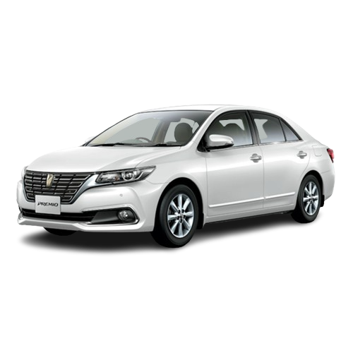
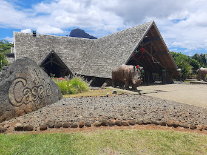
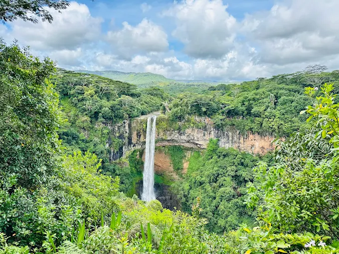

Sir Seewoosagur Ramgoolam International Airport is Mauritius’ main gateway, located in the southeast of the island. It features modern services for travelers.

Your transport is our priority.
We provide you with the best car and driver services.
Below are examples of places to visit in Mauritius:
Airport of Mauritius

Seven Coloured Geopark
The Seven Coloured Earths in Chamarel showcases dunes in shades of red, brown, violet, and yellow. This natural phenomenon is caused by volcanic activities.

Casela Nature Park
Casela Nature Park is an adventure and wildlife park where visitors can enjoy safari experiences, zip-lining, and close encounters with lions, zebras, and giraffes in a lush setting.

Charamel Waterfall
Chamarel Waterfall is the tallest single-drop waterfall in Mauritius, plunging 100 meters into a deep gorge. It offers breathtaking views and is surrounded by tropical forest.

Le Morne Brabant
Le Morne Brabant is a UNESCO-listed mountain with historical significance as a refuge for runaway slaves. Its hiking trails offer stunning views of the coastline and the Indian Ocean.

SSR Botanical Garden
The Sir Seewoosagur Ramgoolam Botanical Garden in Pamplemousses is famous for its giant water lilies and rare palm species making it a peaceful retreat for nature lovers.

Vanilla Nature Park
Vanilla Nature Park is home to giant tortoises, crocodiles, and exotic animals. Visitors can explore tropical forests, learn about conservation, and enjoy interactive wildlife experiences.

Grand Baie Beach
A lively coastal hotspot, Grand Baie Beach is known for its turquoise waters, water sports, and vibrant nightlife. It's a perfect destination for relaxation and entertainment.